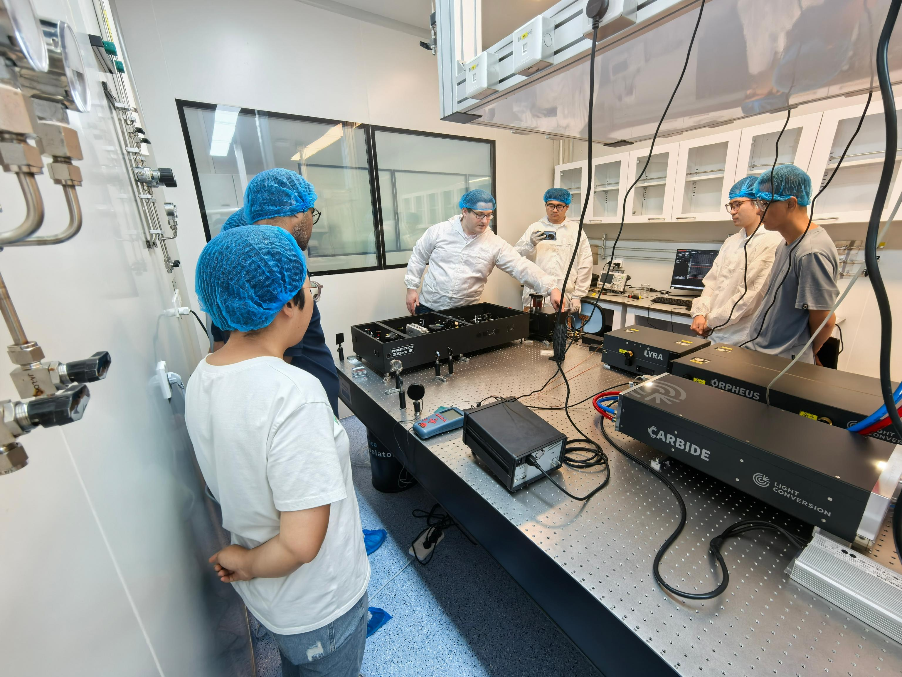

二维红外光谱系统安装调试完成！
2024-08-30 11:38
2024年8月22日，实验室成功引进“2DQuick红外系统”，PHASETECH公司工程师Tom Brinzer莅临实验室，亲自指导2DQuick红外系统的安装和信号调试。

安装完成后，Tom对实验室全员进行现场培训，包括系统操作、数据处理和维护要点都进行了细致的讲解。大家也在Tom的指导下操作系统的关键组件，同时就2DQuick红外系统背后复杂的理论基础和技术优势展开积极的讨论。最后，Tom还分享了一份关于2DQuick IR的详细数据分析报告，为我们对其功能的掌握和潜在应用提供参考。
2DQuick红外系统是一款专为高速、高精度热成像分析而设计的先进设备。该系统采用超快响应红外探测技术，支持毫秒级甚至微秒级动态热过程监测。凭借高灵敏度（≤20mK）和多波段光谱分析能力，2DQuick可精准捕捉瞬态温度变化，并搭配智能分析软件实现实时数据处理和3D建模。我们非常期待在未来的项目中利用这一强大的技术。